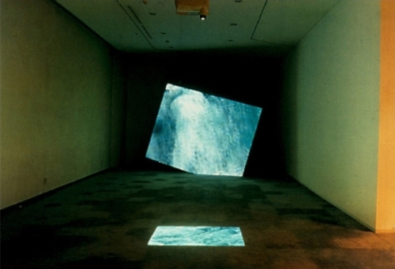
낙수, (1997),
2채널 비디오, 오디오 설치 ,5:45
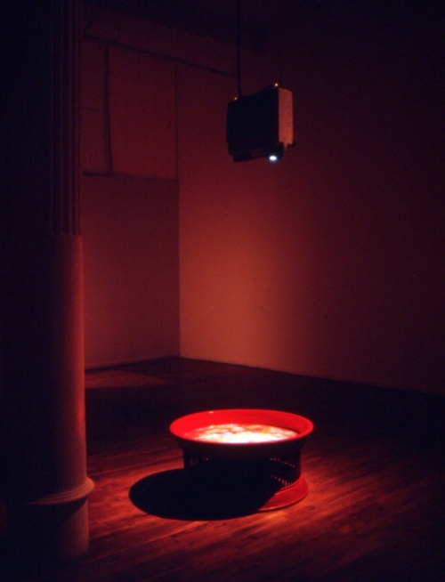
박현기, 만다라, (1997),
단채널 비디오 , 93.5cmx45.0cm ,1:13:29
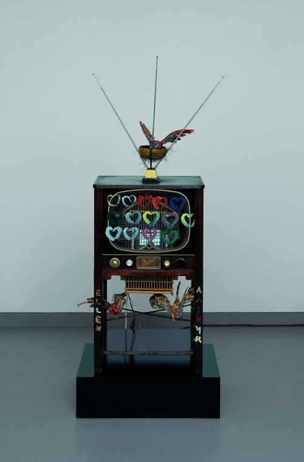
백남준, TV Heart, (1987),
비디오 설치 , 93cmx54.8cm
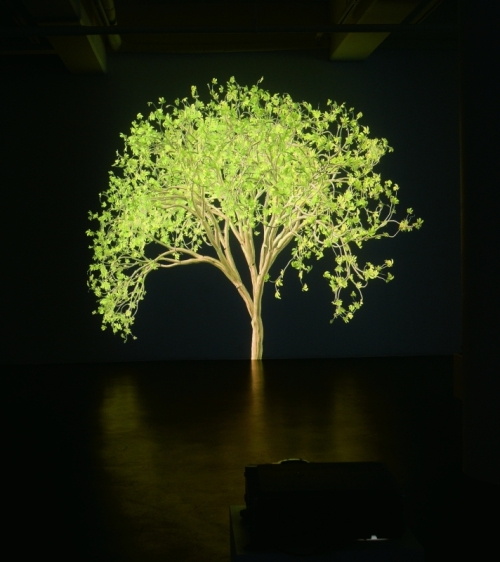
제니퍼 스타인캠프, Fly To Mars 8, (2010),
Video installation, variable size
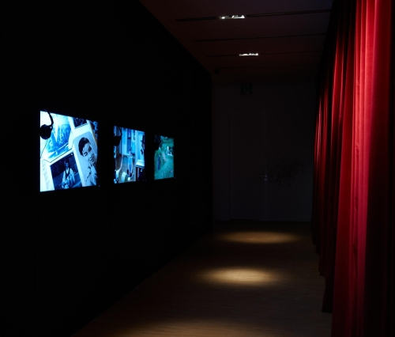
정은영, 가사들, (2013),
Three-channel video
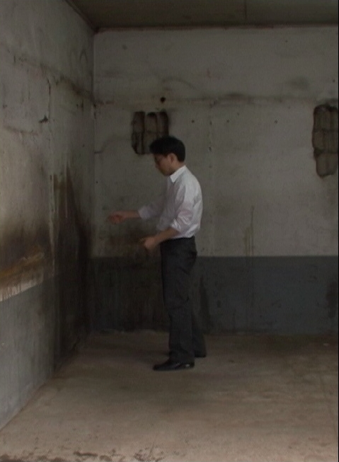
배종헌, 어떤 요리사, (2009),
Single-channel video
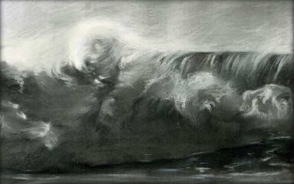
릴릴, 검은 파도, (2011),
싱글 채널 비디오 ,7:00
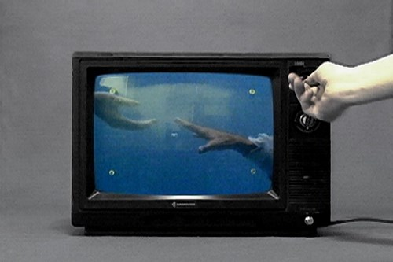
김해민, 접촉불량, (2006),
단채널 비디오
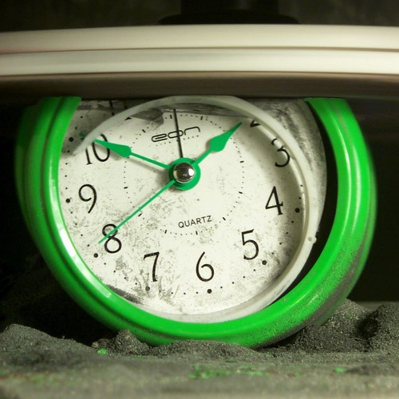
신기운, 진실에 접근하기_알람시계, (2006),
single channel video , 108cmx73cm
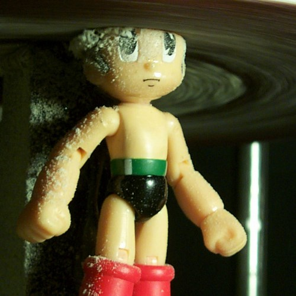
신기운,진실에 접근하기_아톰, (2006),
single channel video , 108cmx73cm
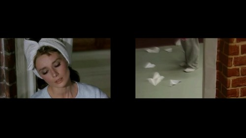
오용석,샴몽타주, (2008),
2 channel video
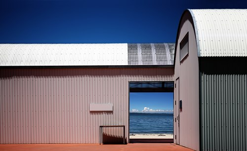
임창민, Ambiguous scene_Teshima, (2016),
Pigment print, Led monitor , 180cmx110cm
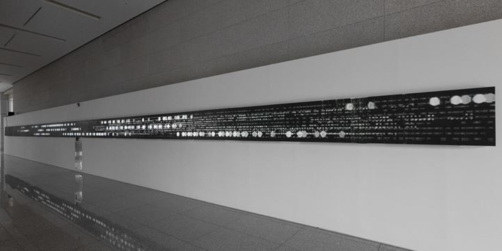
박종규,~크루젠, (2019),
single-channel video, LED monitor
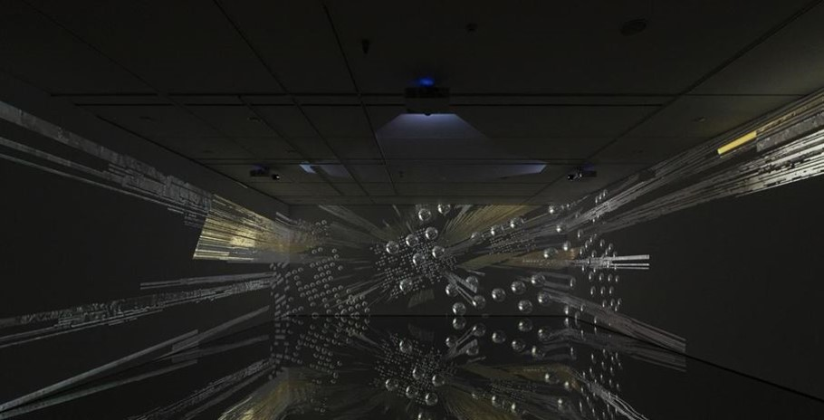
박종규, ~크루젠, (2019),
3-channel video installation, sound, stainless mirror
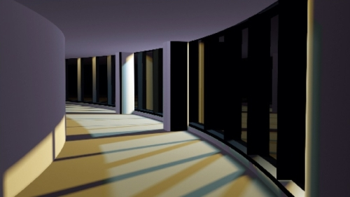
정정주, Curved Passage, (2017),
3D animation , 100cmx200cm
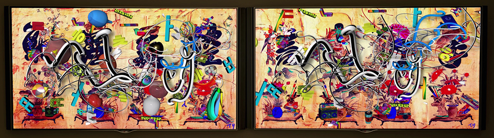
티안, 그 시간속으로(문자도), (2020),
2채널 디지털미디어영상, 60인치모니터 2개 ,4:20
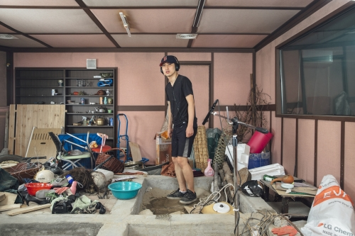
박보나, 1967_2015, (2015),
HD video variable size
권하윤, 489년, (2016),
HD VIdeo
신일월대구도 新日月大邱圖, (2019),
싱글 채널 비디오 , 2320cmx880(px)cm
오다니 모토히코, 인페르노, (2008),
4채널 비디오 설치
김안나, 숨, Breath, 息, (2020),
실시간 라이브 시물레이션
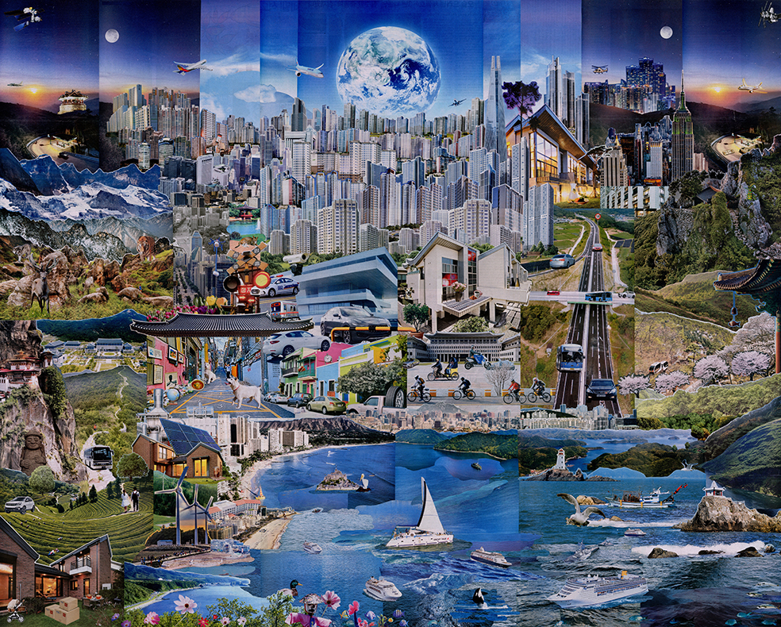
임지혜, 현대세계사전부분, (2017),
종이보드에 신문지 콜라주 , 123cmx152cm
.jpg)
.jpg)
.jpg)